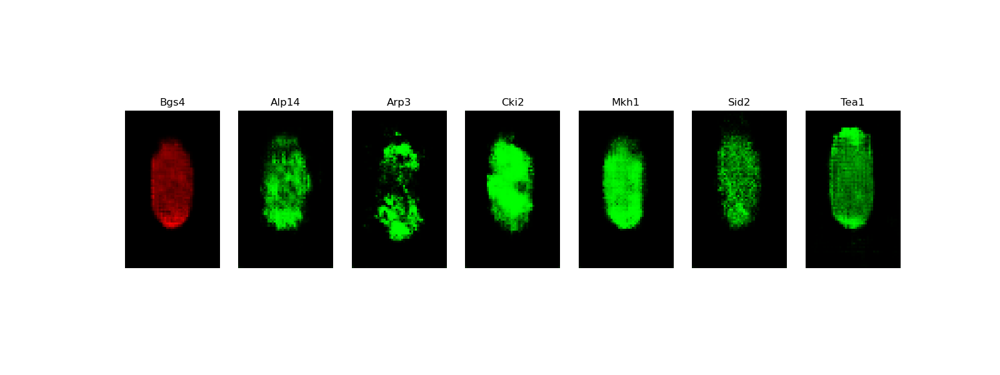
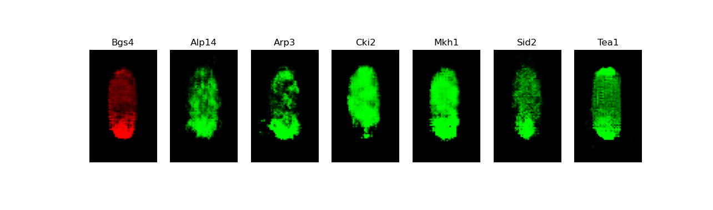
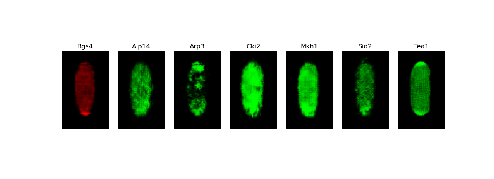

BioGANs is a novel application of Generative Adversarial Networks (GANs) to the synthesis of
fluorescence microscopy images of living cells. It allows to infer and visualize the correlated
localization patterns of different fluorescent proteins. These patterns reflect important biological
functions, but cannot be visualized experimentally for multiple proteins at the
same stage of cell growth cycle.
This application, reimplemented in Keras from the original version devreloped in PyTorch,
is being used as a biological example in class #4 of the course
"Deep Learning by Example on Biowulf".
Allocate an interactive session and run the program. Sample session:
[user@biowulf]$ sinteractive --mem=40g --gres=gpu:p100,lscratch:10 -c8 [user@cn3200 ~]$module load biogans [+] Loading singularity 3.8.4 on cn4225 [+] Loading biogans 20220825The BioGANs application, as it is implemented on Biowulf, comprises the following three executables: train.py, predict.py and visualize.py.
[user@cn3200]$ ls $BG_SRC predic.py visualize.py dataloader.py models.py utils.py train.py dataloaders.py gan.py options.py [user@cn3200]$ cp $BG_SRC/* .To list the executable files, type:
[user@cn3200]$ ls $BG_BIN predict.py train.py visualize.pyTo copy sample data and checkpoints to your current directory, enter the command:
[user@cn3200]$ cp -r $BG_DATA_48-80/* .This command will create the subfolders data and checkpoints, as well as an empty folder images in your current directory.
[user@cn3200]$ tree -l data
data
├ LIN_Normalized_WT_size-48-80_test -> /fdb/BioGANs/data/LIN_Normalized_WT_size-48-80_test
│ ├ Alp14
│ │ ├ cell1006.png
│ │ ├ cell10118.png
│ │ ...
│ ├ Arp3
│ │ ├ cell10056.png
│ │ ├ cell10177.png
│ │ ...
│ ├ Cki2
│ │ ├ cell1005.png
│ │ ├ cell10114.png
│ │ ...
│ ├ Mkh1
│ │ ├ cell10075.png
│ │ ├ cell10106.png
│ │ ...
│ ├ Sid2
│ │ ├ cell10009.png
│ │ ├ cell10098.png
│ │ ...
│ └ Tea1
│ ├ cell10058.png
│ ├ cell10071.png
│ ...
└ LIN_Normalized_WT_size-48-80_train -> /fdb/BioGANs/data/LIN_Normalized_WT_size-48-80_train
├ Alp14
│ ├ cell100005.png
│ ├ cell100087.png
│ ...
├ Arp3
│ ├ cell100057.png
│ ├ cell100079.png
│ ...
├ Cki2
│ ├ cell100026.png
│ ├ cell100044.png
│ ...
├ Mkh1
│ ├ cell100015.png
│ ├ cell100242.png
│ ...
├ Sid2
│ ├ cell100002.png
│ ├ cell100014.png
│ ...
└ Tea1
├ cell100077.png
├ cell100081.png
...
The BioGANs implementation on Biowulf includes only a part of the entire LIN dataset, comprising
26,909 images.
[user@cn3200]$ train.py -h
usage: train.py [-h] [-a GAN_ALGORITHM] [-b BATCH_SIZE] [-c CHECKPOINTS_DIR] -d DATAROOT [--epochs EPOCHS]
[-g num_gpus] [--lrD LRD] [--lrG LRG] [-m NETWORK_MODEL] [-M MONITOR_STEP] [--num_D_iters NUM_D_ITERS]
[--num_G_iters NUM_G_ITERS] [--ngf NGF] [--ndf NDF] [-o OPTIMIZER] [-p POLARITY_FACTORS]
[-s RANDOM_SEED] [-w] [-z NZ] [--wgan_clip_value WGAN_CLIP_VALUE] [--wgangp_lambda WGANGP_LAMBDA] [-v]
optional arguments:
-h, --help show this help message and exit
-a GAN_ALGORITHM, --gan_algorithm GAN_ALGORITHM
training algorithm: GAN | WGAN | WGAN-GP, default=WGAN-GP
-b BATCH_SIZE, --batch_size BATCH_SIZE
input batch size; default=64
-c CHECKPOINTS_DIR, --checkpoints_dir CHECKPOINTS_DIR
checkpoints folder name, default='checkpoints'
--epochs EPOCHS, -e EPOCHS
number of iterations to train for
-g num_gpus, --num_gpus num_gpus
number of gpus to use; default=1
--lrD LRD learning rate for discriminator/critic, default: depends on gan_algorithm and optimizer
--lrG LRG learning rate for Generator, default: 0.0002
-m NETWORK_MODEL, --network_model NETWORK_MODEL
network model architecture: DCGAN | DCGAN-separable | DCGAN-starshaped, default = DCGAN-
starshaped
-M MONITOR_STEP, --monitor_progress MONITOR_STEP
store samples of generated images after each monitor_step epochs
--num_D_iters NUM_D_ITERS
Number of D/C iterations per one step of training GAN/WGAN/WGAN-GP
--num_G_iters NUM_G_ITERS
Number of G iterations per one step of training GAN/WGAN/WGAN-GP
--ngf NGF number of generator filters
--ndf NDF number of discriminator filters
-o OPTIMIZER, --optimizer OPTIMIZER
Optimizer to use for training: default (depends on gan_algorithm) | adam | rmsprop
-p POLARITY_FACTORS, --polarity_factors POLARITY_FACTORS
Comma-separated names of polarity factors data to be used, empty if all
-s RANDOM_SEED, --seed RANDOM_SEED
Random seed, default - the answer to the ultimate question
-w, --use_pretrained_weights
load pre-trained model weights
-z NZ, --nz NZ size of the latent z vector
--wgan_clip_value WGAN_CLIP_VALUE
for WGAN
--wgangp_lambda WGANGP_LAMBDA
for WGAN-GP
-v, --verbose increase the verbosity level of output
required arguments:
-d DATAROOT, --data DATAROOT
Path to the training dataset
Here are examples of the training commands:
[user@cn3200]$ train.py -d data ...(this command will train the default network model, DCGAN-starshaped, using the default gan algorithm, WGAN-GP, on image data corresponding to all the polarity factors available in the folder data/LIN_Normalized_WT_size-48-80_train)
[user@cn3200]$ train.py -d data/LIN_Normalized_WT_size-48-80_train -e 2000 -a WGAN -m DCGAN-separable ...(note that running of both the commands takes long, so they would normally be submitted as a batch job.)
[user@cn3200]$ train.py -d data/LIN_Normalized_WT_size-48-80_train/Alp14 -m DCGAN -a GAN ...(this command will train a model on the data for only one of the polarity factors).
-d data -d data/LIN_Normalized_WT_size-48-80_train -d data/LIN_Normalized_WT_size-48-80_train -p Alp14,Arp3,Cki2,Mkh1,Sid2,Tea1These options are also equivalent:
-d data/LIN_Normalized_WT_size-48-80_train/Alp14 -d data/LIN_Normalized_WT_size-48-80_train -p Alp14 -d data -p Alp14During the training procedure, the following output foolders will be created (if they did not exist previously) in the current working directory:
checkpoints imagesStored in the first of the folders will be files in HDF5 format:
weights.<model type>.<network_architecture>.<gan_algorithm>.h5which can be used by the executable train.py to continue the training procedure from the stored checkpiont.
model.generator.<model type>.<network_architecture>.<gan_algorithm>.h5For example:
[user@cn3200]$ ls checkpoints model.generator.DCGAN-separable.GAN.1.h5 weights.discriminator[1].DCGAN-starshaped.GAN.6.h5 model.generator.DCGAN-separable.WGAN.1.h5 weights.discriminator[2].DCGAN-starshaped.GAN.6.h5 weights.combined_model[0].DCGAN-separable.WGAN.1.h5 weights.discriminator[3].DCGAN-starshaped.GAN.6.h5 weights.critic[0].DCGAN-starshaped.WGAN-GP.6.h5 weights.discriminator[4].DCGAN-starshaped.GAN.6.h5 weights.critic[1].DCGAN-starshaped.WGAN-GP.6.h5 weights.discriminator[5].DCGAN-starshaped.GAN.6.h5 weights.critic[2].DCGAN-starshaped.WGAN-GP.6.h5 weights.discriminator.DCGAN-separable.GAN.1.h5 weights.critic[3].DCGAN-starshaped.WGAN-GP.6.h5 weights.generator.DCGAN-separable.GAN.1.h5 weights.critic[4].DCGAN-starshaped.WGAN-GP.6.h5 weights.generator.DCGAN-separable.WGAN.1.h5 weights.critic[5].DCGAN-starshaped.WGAN-GP.6.h5 weights.generator.DCGAN-starshaped.GAN.6.h5 weights.critic.DCGAN-separable.WGAN.1.h5 weights.generator.DCGAN-starshaped.WGAN-GP.6.h5 weights.critic.DCGAN.WGAN-GP.1.h5 weights.generator.DCGAN.WGAN-GP.1.h5 weights.discriminator[0].DCGAN-starshaped.GAN.6.h5 ...The predict.py executable supports the following command line options:
[user@cn3200]$ predict.py -h
usage: predict.py [-h] [-b BATCH_SIZE] [-c CHECKPOINTS_DIR] [-d DATAROOT] [-D] [-e] -i input_file [--lrD LRD]
[--lrG LRG] [-m NETWORK_MODEL] [--ndf NDF] [--ngf NGF] [-o OPTIMIZER] [-p POLARITY_FACTORS]
[-s RANDOM_SEED] [-v] [-w] [--wgan_clip_value WGAN_CLIP_VALUE] [--wgangp_lambda WGANGP_LAMBDA]
[-z NZ]
optional arguments:
-h, --help show this help message and exit
-b BATCH_SIZE, --batch_size BATCH_SIZE
input batch size; default=64
-c CHECKPOINTS_DIR, --checkpoints_dir CHECKPOINTS_DIR
checkpoints folder name, default='checkpoints'
-d DATAROOT, --data DATAROOT
Path to the training dataset
-D, --debug output debugging info
-e, --evaluate evaluate predicted images by comparing with real data
--lrD LRD learning rate for discriminator/critic, default: depends on gan_algorithm and optimizer
--lrG LRG learning rate for Generator, default: 0.0002
-m NETWORK_MODEL, --network_model NETWORK_MODEL
network model architecture: DCGAN | DCGAN-separable | DCGAN-starshaped, default = DCGAN-
starshaped
--ndf NDF number of discriminator filters
--ngf NGF number of generator filters
-o OPTIMIZER, --optimizer OPTIMIZER
Optimizer to use for training: default (depends on gan_algorithm) | adam | rmsprop
-p POLARITY_FACTORS, --polarity_factors POLARITY_FACTORS
Comma-separated names of polarity factors data to be used, empty if all
-s RANDOM_SEED, --seed RANDOM_SEED
Random seed, default - the answer to the ultimate question
-v, --verbose increase the verbosity level of output
-w, --use_pretrained_weights
load pre-trained model weights
--wgan_clip_value WGAN_CLIP_VALUE
for WGAN
--wgangp_lambda WGANGP_LAMBDA
for WGAN-GP
-z NZ, --nz NZ size of the latent z vector
required arguments:
-i input_file, --input_file input_file
Saved generator model or weights file
Example of runing this executable on a saved checkpoint files: [user@cn3200]$ predict.py -i checkpoints/weights.generator.DCGAN-starshaped.WGAN-GP.48_80.1.6.h5 ... Output image stack to file: images/stack7.DCGAN-starshaped.WGAN-GP.h5Now visualize the predicted images:
[user@cn3200]$ visualize.py -h
usage: visualize.py [-h] -i input_file [-v]
optional arguments:
-h, --help show this help message and exit
-v output debugging info
required arguments: -i input_file The file to be visualized
[user@cn3200]$ visualize.py -i images/stack7.DCGAN-starshaped.WGAN-GP.h5
 [user@cn3200]$ predict.py -i checkpoints/model.generator.DCGAN-separable.GAN.1.h5; visualize.py -i images/stack7.DCGAN-starshaped.GAN.h5
[user@cn3200]$ predict.py -i checkpoints/model.generator.DCGAN-separable.GAN.1.h5; visualize.py -i images/stack7.DCGAN-starshaped.GAN.h5
[user@cn3200 ~]$ exit salloc.exe: Relinquishing job allocation 46116226 [user@biowulf ~]$